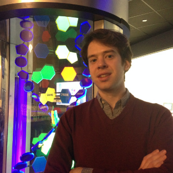

<div id="home">
	<div class="post">
		<p>
		I am a Bioinformatics PhD Candidate at Indiana University in <a href="http://www.soic.indiana.edu">The School of Informatics and Computing.</a> I worked as a sequencing analyst for <a href="http://cgb.indiana.edu/">The Center for Genomics and Bioinformatics</a> for three years under <a href="https://www.soic.indiana.edu/people/profiles/tang-haixu.shtml">Haixu Tang</a>, where I learned how to assess the quality, store, manipulate, and analyze data from <a href="http://www.illumina.com">Illumina</a> and other <a href="http://en.wikipedia.org/wiki/DNA_sequencing#Next-generation_methods">next-generation sequencing</a> technology.
		</p><p>
		Since the summer of 2013, I have been remotely working on my dissertation from Texas. Luckily, I can conduct my work on all the research servers at SOIC and UITS from my home. While the site is not the most user friendly, I do appreciate all the open access data archived at <a href="http://www.ncbi.nlm.nih.gov/sra">NCBI's SRA.</a>
		</p><p>
		In my free time I keep up with programming languages, algorithms, and the open-source movement. Recently, I have been experimenting with <a href="http://www.khronos.org/opencl">OpenCL</a> on mobile platforms like the ARM Chromebook. Beyond my own interests, I hope to leverage current technology to bring bioinformatics computing to consumer hardware.
		</p>
	</div>
</div>
